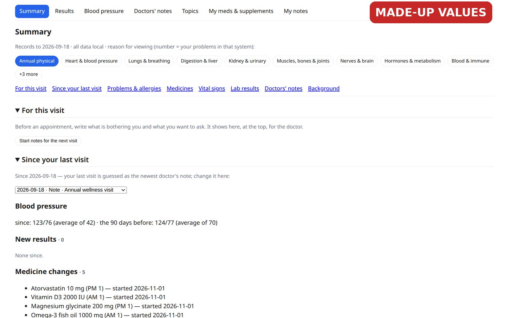
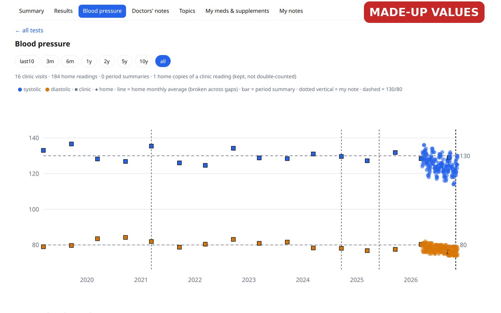
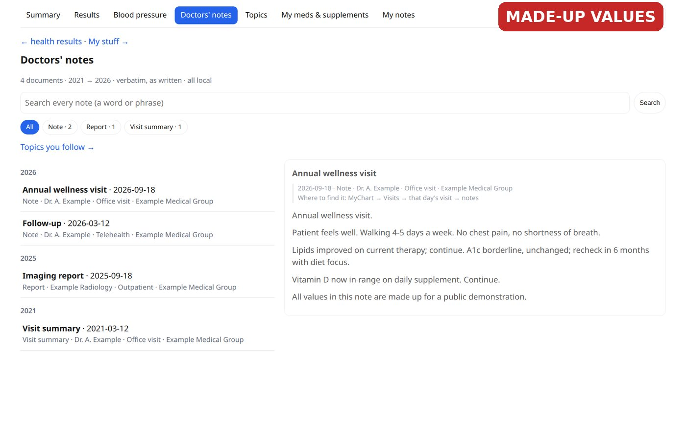
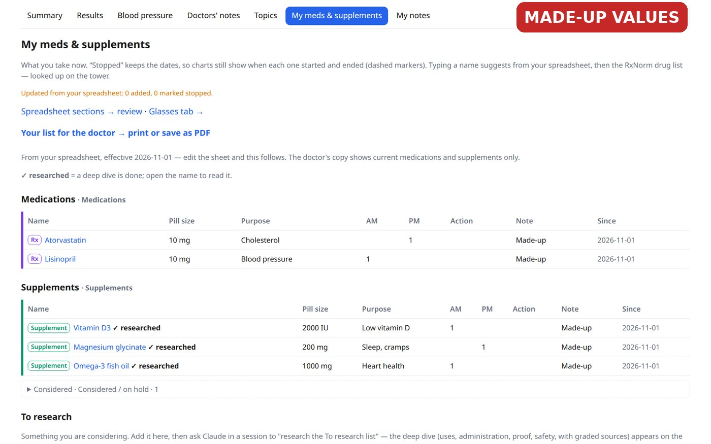
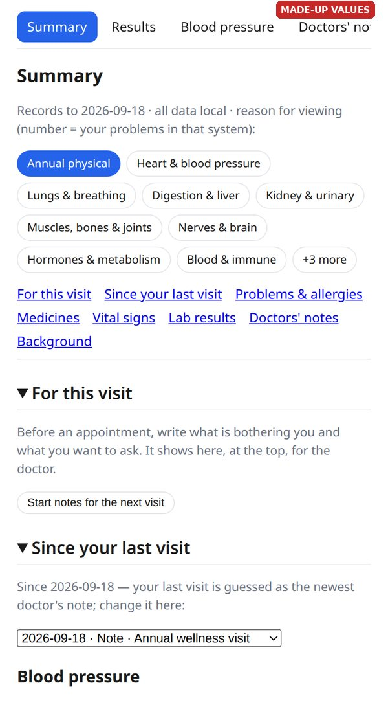

My own medical records
Several providers, several MyCharts, none of them talking to each other. I wanted one copy of my records, on my own computer, that I could chart, search and question — and that would still be there when I change primary providers again.
1. Getting the records out
There are two doors. You can request a download of your records from MyChart, and that mostly works but is high friction to add new visits or information. Turns out that Epic, the company behind MyChart, offers direct connections to health apps. I registered a free Epic developer account, built a small private app, and now three provider organizations feed one record — downloads and the live connection both.
2. Numbers and words go to different places
Lab values go in a database where numbers can be charted; doctor's opinions are kept word for word. The two are linked by date.
3. Getting the numbers right — the hard part
Mistakes are costly. Turns out that some readings arrive many times — overlapping downloads plus the live connection. Worked on it, and the fix was to treat a reading as the test, the day, the value and the unit, whoever reported it.
4. Making it readable
Every test and drug gets a plain-English “What is this?” from the National Library of Medicine's public dictionaries (MedlinePlus, MeSH, RxNorm), kept on the tower. My home blood-pressure cuff readings sit next to the clinic's, and my own notes — started a medicine, changed a habit — are drawn on the charts as dates, so cause and effect are easy to see.
5. A local AI, tested before trusted
A model running on the tower (Qwen3, 14 billion parameters) summarises doctors' notes and answers questions about them. Before trusting it, I tested candidates on invented notes with planted traps. The one that stayed has a strict rule — date every fact — and a second pass that checks each sentence against the note.
6. Supplement deep dives
For each supplement I take or am considering: what it is used for, how to take it, the evidence, and the safety (interactions included). The evidence is weighed by my own rubric — randomised trials with at least 25 people count, maker-funded studies count half, specific and independent user reports count. This is the one place a frontier AI helps: Claude does the research from the supplement's name only — never my records — and I review every deep dive before it goes in the library.
Mostly used on a tablet, held sideways — these are the screens as they look there.

Before a visit: what changed since the last one, my blood pressure, new results and medicine changes, sorted by the reason I'm going.

Every lab result from every provider on one chart over the years, with the normal range and my own notes (a medicine started, a habit changed) drawn in.

My home readings next to the clinic's, against the 130/80 line.

Every visit note and report, word for word, searchable.

Current, stopped and considered. Each supplement links to a deep dive on the evidence; one tap prints the list for the doctor.

The same records on the phone, anywhere, through my private network.